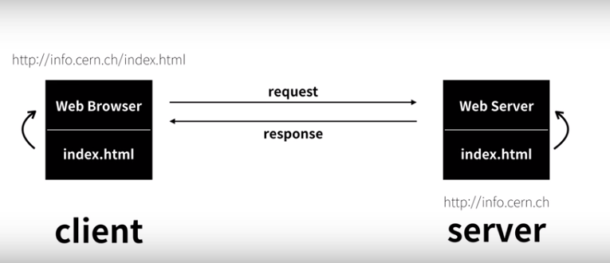

- INTERNET
- HTML
- CSS
- JavaScript
웹은 인터넷이라는 거대한 플랫폼 안에 존재하는 프로그램과 같다.
- 1960 - Internet 의 등장
- 1980 - WEB의 전신인 Enquire 등장 by Tim Berners Lee
- 1990 - 현대의 WEB 등장(핵 공격에 의한 통신마비 대비)
more story about WEB

- Client : Whom demands service ex) WEB BROWSER
- Server : Whom offers service ex) WEB SERVER
- Sever contains many web pages, and offers them when requested.
- Every Client can request data to Server